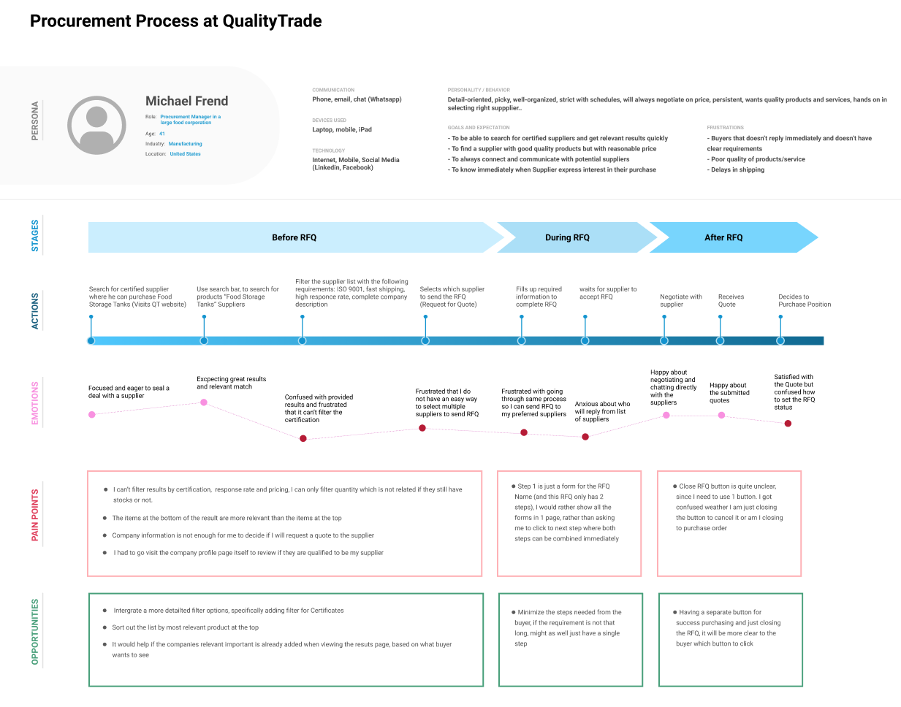
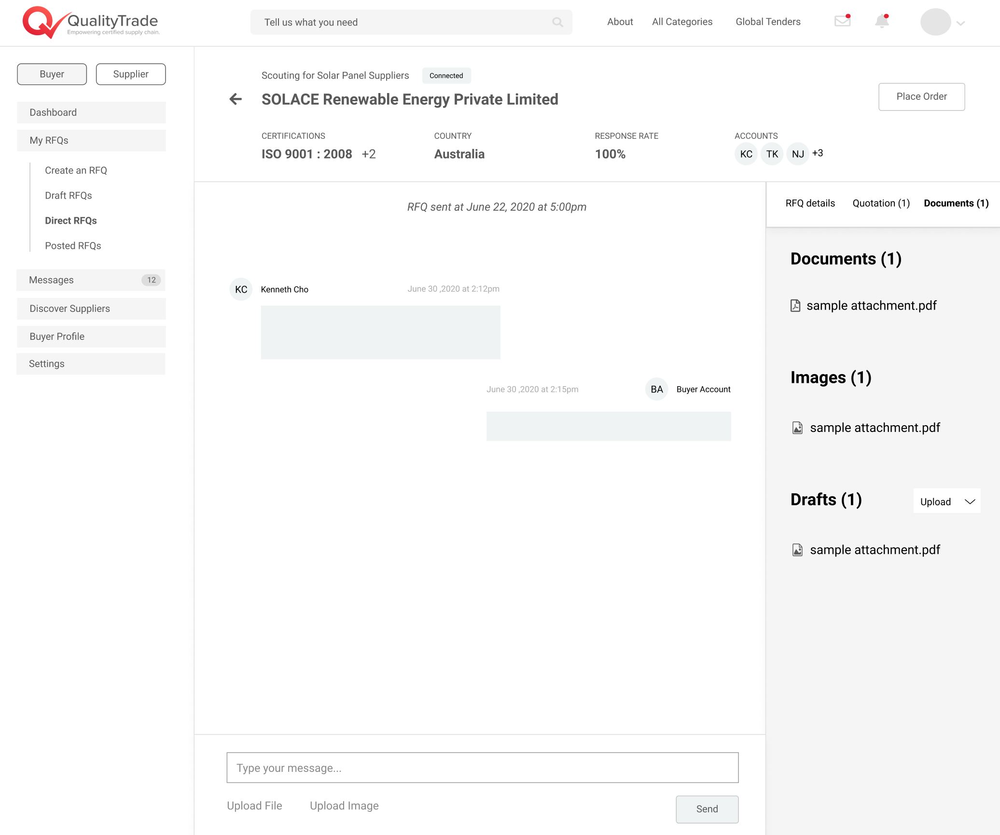
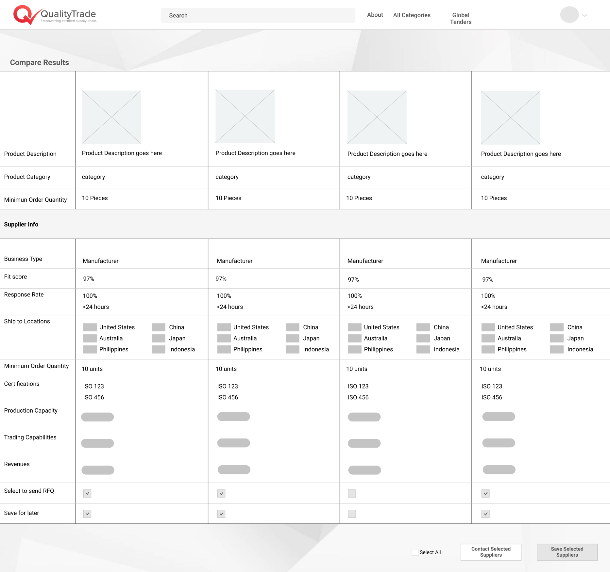
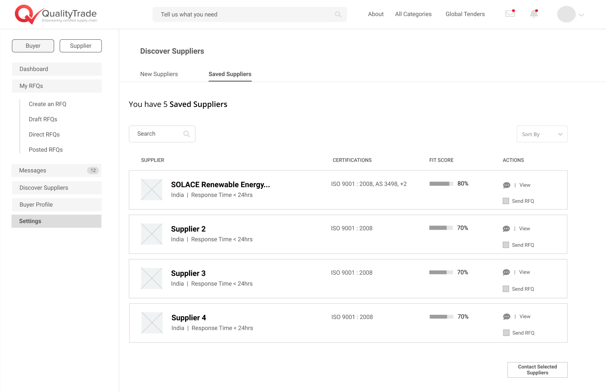
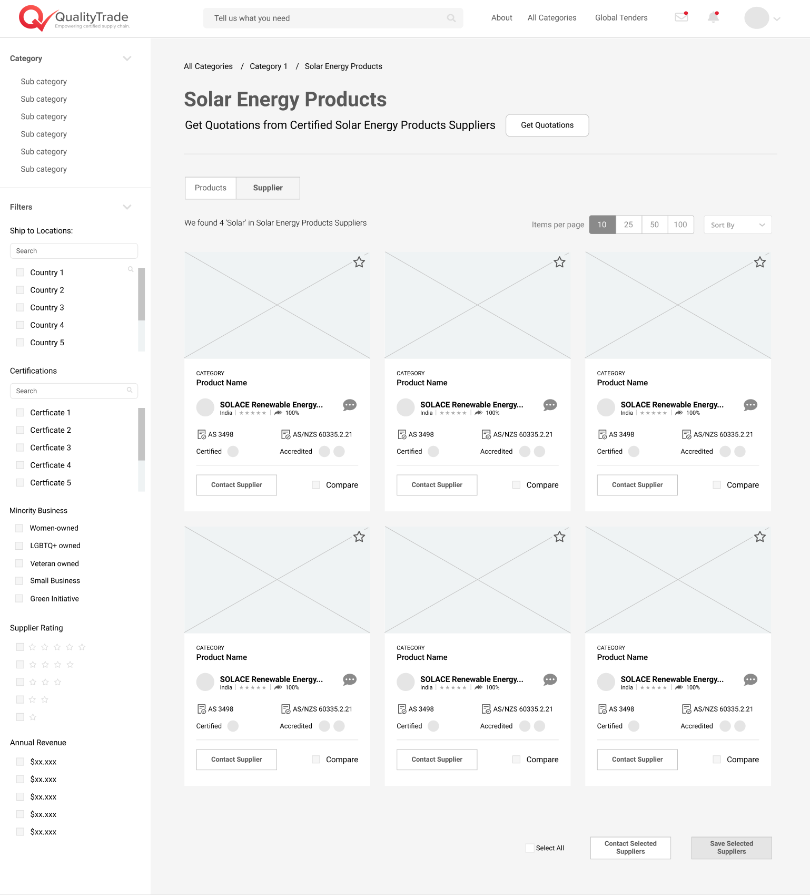

Andrea Wegner
Student at the University of Michigan
Timeline: June 2020 - August 2020
Skills: Persona, Journey mapping, User interviews, Wireframing, Prototyping
Tools: Figma, Slack, Skype, Zoom, Google Drive
Problem
When I joined the team in June 2020, Quality Trade was beginning the process of streamlining its site experience and making it appealing to new markets.
Research and Design Process
I began this process by writing out the flow of the website and creating a report with changes necessary for a streamlined user experience. We then began competitor analysis. I then analyzed four QualityTrade competitors to decipher what features they were missing to begin appealing to their target markets. Next, I contacted people within the target market through LinkedIn for interviews. I then compared the findings from the interviews with the initial fault-finding report and competitor analysis to discover the top five changes that need to be made for QualityTrade to appeal to bigger companies.
Here is the journey map created for the procurement process at QualityTrade.
Key UX Decisions
Create an end-to-end procurement process. The first thing we discovered in our research was that many big companies didn’t have procurement software that allowed them to complete the entire procurement process from start to finish. To create this for Quality Trade, I added the ability to upload, create, and send documents while negotiating deals and contracts.
Create a transparent chat tool. The biggest issue my interviewees had with their current procurement process was their lack of trust in their suppliers. We addressed this problem was by making a transparent chat tool with a spot for buyers to see all documents and images in one spot.
Add a compare feature. Another important finding in our research was that many companies sent quote requests to multiple suppliers. To help companies do that we added a compare feature as well as the ability to send multiple quotes at once.
Add a save supplier feature. My research also found that many procurement professionals consult experts for advice on suppliers and products. To address this I added a save feature so users could save products or suppliers they're interested in, then ask coworkers for advice.
Increase the number of filters. When interviewing procurement professionals, I found that many of them had requirements such as companies owned by minorities, or other certifications. To fulfill this wish, we added a filter of minority qualifications, ISO certification types, and the average rating given by buyers on the QualityTrade site.
Prototyping
Below I have included the prototype I created in Figma. I would like to note that only the pages I helped work on are in this prototype. Because of that, it is incomplete. This is most noticeable in the dropdown menu on the top right corner of the screen that can only direct you to chat and saved suppliers. Due to the constraints of Figma embedding, some things in the embed do not work unless they are in full-screen and you can only see one section of the screen at a time.